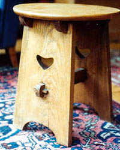
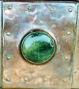

Its not all Hearts and Roses!
The attribution of furniture and objects as 'Arts and Crafts', or better still as being the work of a specific designer is difficult as most pieces were not signed and there are few records. There are experts in museums at Cheltenham, Victoria and Albert Museum in London and at Glasgow, and there a fair number of collectors and experienced dealers who can identify Arts and Crafts pieces within their own sphere of interest. Attribution becomes very important if you are buying expensive pieces and it pays to make sure the receipt has a full description of the item including any attribution. Don't rely on dealers who claim their items are 'almost certainly' or 'probably' by a particular maker unless they can produce some evidence or are at least willing to give a proper receipt. Buying from auction can be exciting but take care, things may not be what they appear to be.

There are some very easily recognised features of Arts and Crafts pieces particularly in respect to furniture made by commercial companies, and by handicrafts schools. Heart shaped piercing is perhaps the best known motif and no one seems quite sure how this motif became adopted by the Arts and Crafts movement. Voysey was particularly fond of using hearts in his designs and companies such as Liberty and Shapland and Petter also used them extensively. A variety of heart shapes were used; elongated, squashed of flattened inverted, and in the case of Scottish work, the split heart. Other common motifs are the ying yang and the trefoil of three linked circles.
Look out for visible signs of construction in the form of pegs, dowels, exposed mortise and tennon joints as well as deep chamfering.
Quality furniture in oak tends to include quarter sawn oak which shows very good graining i.e. medulary rays which give color and interest. See the illustration of Oak inlaid panel by Shapland and Petter. Care in selection of wood should be easy to see as visual appeal of the wood itself will be a central decorative feature.
Arts and Crafts collectors will know the significance of the architectural style in furniture and artefacts, common features being a tapering style, gentle arches, roofed construction in furniture and in clocks, and the inclusion of stained glass panels or decorative glass often in the style of small windows.
The use of Copper, Mottos and other features
Another common characteristic is the use of copper for strap hinges, repousse panels and handles, often reflecting a medieval or romantic style. Copper panels are highly desirable and hand beaten repousse if well done can much more pleasing than machine pressed. Motifs include galleons, yachts, and Viking ships as well as the ever popular hearts and Glasgow roses. There are also stylised plants forms often with entwined flowers, Celtic entrelac, Honesty and other decorative plant forms.
If you're really lucky you may see pieces with inscriptions or mottos either carved, pierced or beaten in copper panels. Of particular interest here is the style of writing which is very often Celtic or 'Quaint' in style. Inscriptions tends to use elongated or stylised letters designed for their decorative effect and the way they add to the shape of the whole inscription and the piece of furniture that they are inscribed upon. Whilst inscriptions are pleasing visually, their messages are occaisionally too sentimental or a little patronising.

Other features of arts and crafts design include decorative features such as ceramic cabochons ( glazed pottery discs or heart shapes in red, blue or green porcelain or peacock enamels) many of these were supplied by the Ruskin pottery, those for Shapland and Petter were supplied by Branham and Della Robia art potteries. Inlay was also used in silver , pewter, and mother of pearl as well as marketry in fruitwood , stringing and checkering in ebony and stained wood. One of the most important features of a good piece of furniture is the design and condition of the handles and metalwork, copper being particularly attractive and usually preferred with the original patina (rather than cleaned with brass cleaner or steel wool)
Whatever added decoration of the piece the most important factor is the quality of the craftsmanship in construction. People who are new to collecting Arts and Crafts furniture should be wary of poorly made pieces and watchful for ornamental features added after the piece was made. The quality of some of the most desirable pieces lies in the thoughtful design, the elegance in construction and the natural beauty of the material with which they are made. Good pieces are useful and beautiful.